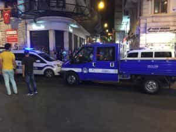
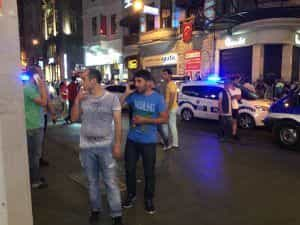
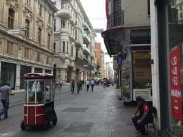
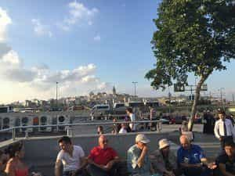
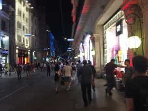
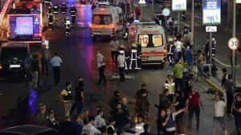

Kyle is an entrepreneur and nomad who has been living abroad since 2016. He blogs at This Is Trouble. Follow him on Facebook.


On this most recent Tuesday night at 10:30, I took a break from enjoying the sights and sounds of Istanbul. I sat down at an outdoor cafe, located in a quaint little alley just off of Istiklal Street, the main drag of Istanbul’s center.
I had just landed on Monday evening, roughly 30 hours before. I was taking a break from my six weeks of living in Odessa, having always wanted to see the sights of Istanbul. Yes, I’d heard of all the “dangers” of the country, but I did my due diligence and decided it was worth it.
I pulled out my phone and had some 50 notifications between Twitter, texts, and emails. I felt like a hot girl the morning after she uploads a bikini shot to Instagram. All of them saying the same thing.
“There was an attack at the Istanbul airport, are you ok?”
I was fine obviously fine, and was told I should probably head home and away from any of the main areas—but I couldn’t resist walking around. I had to see the truth about how our media would portray this attack on the other side of the world.
The fact of the matter is, it’s not pretty.
You would think that in the immediate aftermath of the attack, people would head indoors, but that wasn’t the case at all. It wasn’t for a lack of knowledge, either. Every TV in every bar had the news of the attack on. However, that didn’t deter people from having a good time.
There was a bit of a situation when police were investigating “fireworks” on Istiklal Street about an hour after the explosions at the airport went off:


Everything else was perfectly normal.
I went home and attempted to sleep, but between a bit of adrenaline and responding to all of my concerned family, friends, and blog readers—I didn’t get to bed until 4am.
If you ever find yourself in a situation like this, understand that the most stressful part is really other people. Everyone else freaks out: wants to know how you’re doing and is sending you different news articles and pieces of advice. It’s the worst part of the situation. For many times during the next two days I just wanted to turn my phone off.
Here is where the North American media has their own agenda. Some media outlets seem intent on showing that there is mass hysteria and panic in Istanbul, while others want to project the image of absolute safety and security.
For example, this article depicts the streets of Istanbul being a ghost town the next day.
The greatest injury however may be what this attack has done to the psyche of the Turkish people. In a city of 20 million people, it’s rare to see an empty corner, let alone a street, and yet in the aftermath Wednesday morning, the normally brimming thoroughfares were still.
The main drag was a bit quiet until the afternoon, as evidenced of this picture I took around 11:30am on Wednesday morning:

The rest of it? A complete lie.
Public transportation was still full. The main squares were still packed with locals and tourists doing their shopping. This was taken from the market square just off of Galata Bridge:

At night, nothing was different:

When I talked to a couple of local shop owners, they were very nonchalant. To them, this is just everyday life. It’s how it is. Many of the small attacks are not covered by our media, at least on a big scale. To me, it seems, we’re being portrayed a picture of absolute terror. That we should be frightened, and allow the governments who condemn terrorism to handle it.
They’re doing everything they can to make it seem like it’s under control. But it’s not.
This was the most shocking thing to me.
If you look at all of the various articles regarding the airport reopening, you’ll see a common trend. They are always full of pictures of increased surveillance and security at the airport: policemen scanning cars in the roads leading up to the airport, bomb dogs, security with rifles patrolling everywhere.
I was shocked because there was none of that.
My taxi driver drove straight up to the departures drop off without a single person so much as looking at us. There was no pre-airport metal scanner surveying the underside of our car. No bomb dogs being walked through a line of cars checking things out. In the taxi line, I only saw two police officers patrolling outside.
Part of this outside area has been walled off and no longer looks like a war zone (but those images would never make the front page):

Inside the airport was the same.
Sure, they have metal detectors and a brief security system before you can check in for your flight, but many airports do. There was no armed security by these. Just a simple metal detector operated by a group of workers who hardly looked more enthusiastic or vigilant than TSA employees.
After checking in and going through real security, nothing was different than any other day.
From the moment I stepped into the cab at my apartment to the time I boarded my flight, I saw no additional security measures that would make me think that just two days earlier a couple of bombs had exploded in the world’s 11th-busiest airport.
Why is the media showing the absolute terror of the situation (as well as in the city itself the next day), but then projecting an image of security and safety in the days after?
Do they do it with all terror situations, like the Orlando shooting?
I suspect their agenda is to show the terror to frighten everyone, and then project the myth that it’s all under control in the days after. Their underlying message isn’t something I fully understand at this point, but Roosh has some thoughts on it.
All I know is this: I saw what they showed regarding the Istanbul attacks, and it’s safe to say–the North American media is full of lies.
Read More: 12 Buzzwords Liberals Use To Scare You Into Agreeing With Gun Control